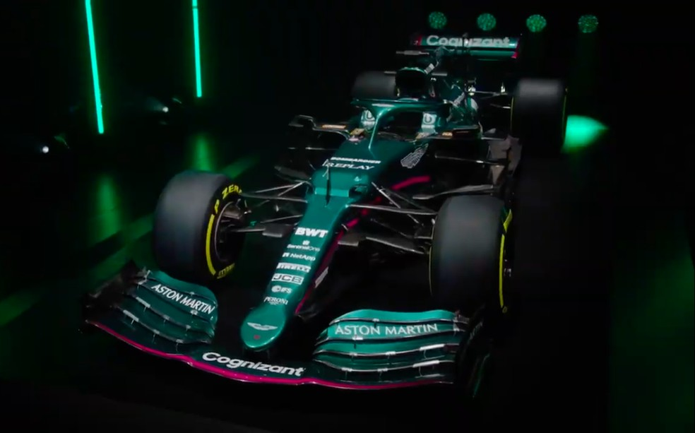
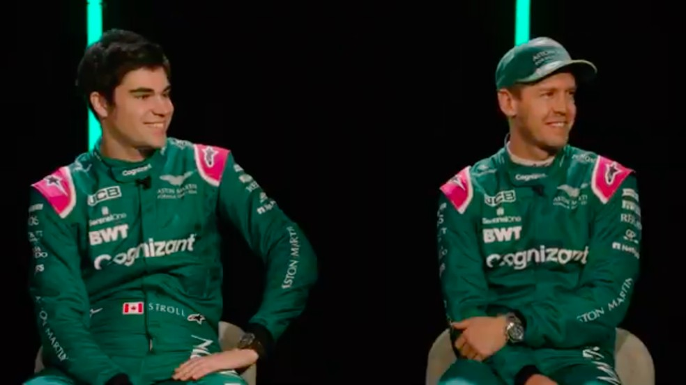

Aston Martin apresenta carro verde e rosa com qual Sebastian Vettel tentará reagir na Fórmula 1
Com predominância do verde escuro e detalhes em rosa, ex-Racing Point chega para
a temporada 2021 com expectativa de continuar brigando por pódios com alemão e Lance Stroll

A Aston Martin revelou nesta quarta-feira o carro com o qual disputará o
campeonato da Fórmula 1 em 2021. Com o verde escuro tradicional da
marca e do automobilismo britânico e detalhes em rosa de um
patrocinador, o modelo AMR21 será pilotado pelo tetracampeão
Sebastian Vettel, que tentará reagir na carreira após uma fraca
temporada na Ferrari, e pelo canadense Lance Stroll.
Até 2020, a equipe se chamava Racing Point, mas, após o dono Lawrence
Stroll (pai de Lance) comprar a Aston Martin, o nome do time foi alterado
- a montadora inglesa teve equipe na F1 em 1959 e 1960.

Como por regulamento as equipes terão de usar os mesmos carros de
2020 com alterações aerodinâmicas, o AMR21 nada mais é do que o
chassis RP20 da Racing Point do ano passado. Este modelo, por sua vez,
é tido por muitos como uma cópia do W10 da Mercedes de 2019, fruto
da parceria técnica entre as equipes - a Racing Point perdeu15 pontos no
Mundial de Construtores e foi multada por usar o mesmo duto de freio
traseiro da Mercedes.
Resta saber se a Aston Martin será chamada de Mercedes Verde nas
redes sociais como a Racing Point recebeu o apelido de Mercedes Rosa
devido às cores da época. Fato é que em 2020 a Racing Point foi a quarta
colocada no Mundial de Construtores, com direito a uma vitória de
Sergio Pérez no GP de Sakhir e uma pole position de Lance Stroll na Turquia,
sob chuva.

- Ainda estou com fome de vitórias, senão eu não estaria aqui.
Obviamente são muitas corridas, mas, sim, vou correr para vencer. É um
projeto muito emocionante, um novo começo, um novo capítulo
também para mim, para o time inteiro. Estou muito ansioso, vencer de
cara talvez seja ambicioso, mas definitivamente é o objetivo de todos.
No passado, o time foi forte mesmo com recursos limitados, agora
evidentemente as regras estão mudando um pouco - disse Vettel.
- É um novo capítulo da Aston Martin, extremamente emocionante, um
grupo talentoso de pessoas, dos desenhistas na fábrica, as pessoas na
pista todo dia, é muito empolgante - comentou Stroll.